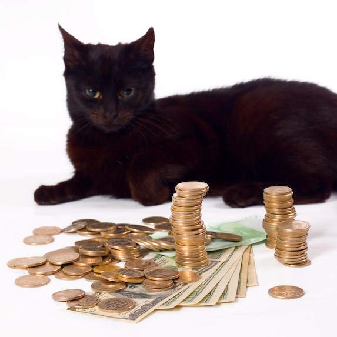
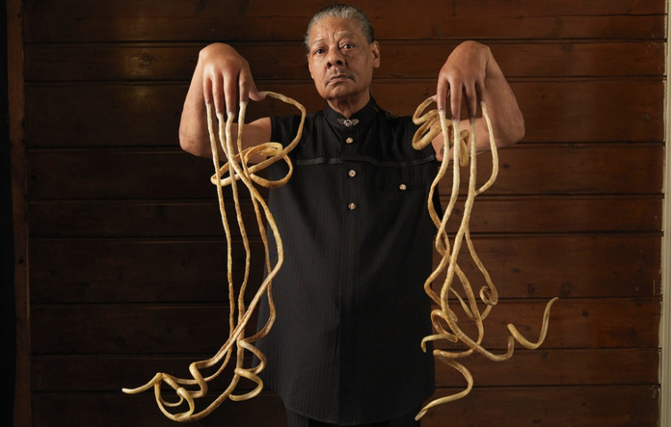
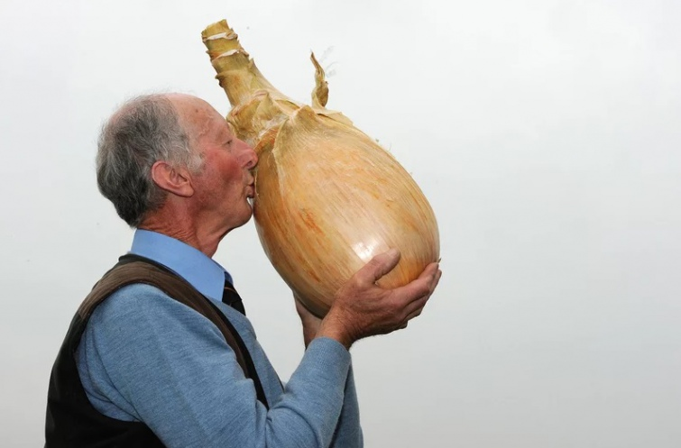
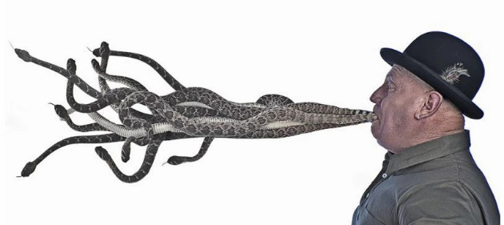
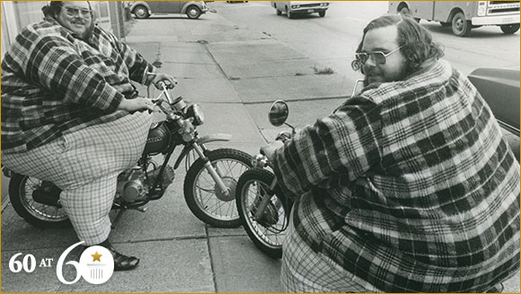
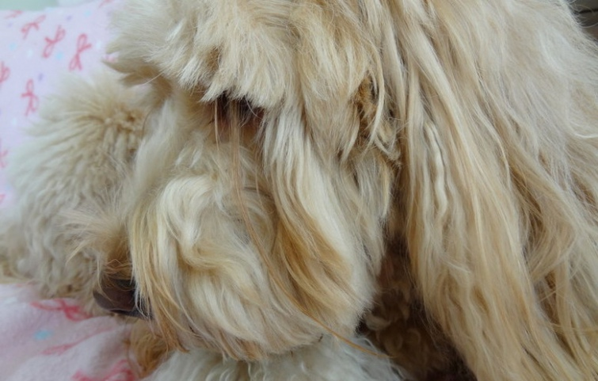

10 найдивніших рекордів гінеса
"Книга рекордів Гіннесса" (World Records of Guinness) – щорічний довідник унікальних досягнень людей та тварин, нечуваних природних явищ та видатних подій шоу-бізнесу, мас-медіа та культури – має свій день народження.З 2005 року він відзначається 9 листопада. Саме тоді був проданий 100 мільйонний екземпляр видання і воно отримало статус "книги, захищеної авторським правом, яка найбільше продається в світі".
За легендою цю книгу створив британський інженер і власник пивоварні Х’ю Бівер, коли відправився з друзями на полювання і між чоловіками зав’язалася суперечка, який з диких птахів найшвидший.Чоловіки тоді переглянули кілька різних довідників, але відповіді не знайшли.Так Бівер і вирішив створити книгу, що розповідатиме про рекорди. Назвав він її на честь своєї пивоварні.
Вченими був складений рейтинг найрозумніших порід собак, який ми і хочемо сьогодні опублікувати.
-
2008-й:
Кевін Шеллі за 1 хвилину розбив головою 46 сидінь для унітазу.

-
1988-й:
Блекі став найзаможнішим котом у світі, отримавши в спадок від свого хазяїна 12,5 мільйона доларів.
 -
Німецька вівчарка
Не буду довго розповідати про цю породу. Напевно всі дивилися фільми і серіали, де представники цієї породи виступали головними героями. Німецькі вівчарки можуть з однаковим успіхом бути охоронцями, поводирями і пастухами. Їх частіше за інших порід використовують для служби в армії, поліції або при охороні державних кордонів. А ще вони відмінно ладнають з дітьми.
-
2009-й:
американець Мелвін Бут потрапив до Книги рекордів Гіннеса як чоловік із найдовшими нігтями на руках (загальна довжина 9,85 метра).
 -
1998-й:
Суреш Йоахім зі Шрі-Ланки здіснив у австралійському торгівельному центрі найдовший "заїзд" по ескалаторах – 225 кілометрів 308 метрів.

-
2011-й:
Піт Глейзбрук презентував на ярмарку в Англії найбільшу в світі цибулину. Вага її склала 8,16 кілограма.
 -
2009-й:
Найбільша кількість отруйних змій у роті,Джекі Біббі — людина, яка протримала в роті 13 гримучих змій протягом 10 секунд.
 -
1998-й:
Найбільша і найтупіша книга у світі,у встановленні цього рекорду відзначився Лес Стюарт з Шотландії. Він, зокрема, написав книгу на 19 890 сторінок. На сторінках були цифри від одного до мільйона, написані прописом
-
1998-й:
реслери Біллі та Бенні МакКрері стали найважчою двійнею в сіті – 337 та 328 кілограмів. Це один з перших рекордів, які було вписано до Книги, пише Time.
 -
2014-й:
песик породи лабрадудель встановив рекорд як власник найдовших серед собак вус – 20 сантиметрів.

Ми розуміємо, що для кожного любителя собак його вихованець найкращий і найрозумніший, тому не варто звинувачувати нас, якщо породи ващої собаки немає у цьому списку. Краще розкажіть про те, яка вона розумна, в коментарях до цього матеріалу.